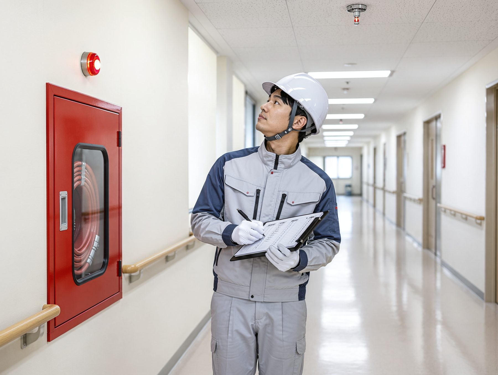

01 ― AT A GLANCE［社名］ RECRUIT GUIDE
ひと目でわかる、［社名］。
建物の空気・水・安全を守る設備をつくり、直し、見守る。地域の暮らしの土台を支える会社です。
66
年
県内で最も歴史のある設備会社の一つとして、
地域の建物を支え続けてきました。
創業 ［年］
2026
BUSINESS ｜ 3つの事業
空調設備
温度と空気を整え、快適な室内をつくる
給排水設備
水を届け、流す。暮らしの通り道をつくる
消防設備
火災から命を守る設備を、確実に備える
STRENGTH ｜ 私たちの強み
01漏水探知の技術他社で見つからない漏水の相談が、行政から届く
02自社施工自分たちの手でつくり、品質に最後まで責任を持つ
03公共事業が中心学校・病院・庁舎など、地域に欠かせない仕事
経済産業省健康経営優良法人 認定
環境省エコアクション21 15年連続認定
02
03 ― OUR WORK［社名］ RECRUIT GUIDE
建物を、ひとつの
「からだ」と考える。
呼吸し、血が巡り、身を守る。建物にも欠かせない3つの働きがあり、私たちはそのすべてを手がけています。
01空調設備 ― 建物の「呼吸」
エアコンや換気で、温度と空気を整えます。夏の教室も冬の病室も、快適に過ごせるのはこの設備のおかげです。
02給排水設備 ― 「血管」
きれいな水を届け、使った水を流す配管をつくります。壁や床、地面の下に隠れた水の通り道を守ります。

03消防設備 ― 「守り」
スプリンクラーや消火栓など、火災から命を守る設備を備えます。いざという時に必ず動く。その責任を担う仕事です。
写真はイメージです04
05 ― STRENGTH 02・03［社名］ RECRUIT GUIDE
IN-HOUSE ｜ 自社施工
自分の手でつくるから、
最後まで責任を持てる。
工事の多くを下請けに任せず、自社の社員が施工します。誰がつくったかが分かる仕事だから、品質に妥協しない。その姿勢が、公共事業の品質を守ってきました。
調査・計画
自社で施工
検査・引き渡し
点検・修理
PUBLIC WORKS
公共事業が
中心です
中心です
学校、病院、庁舎など、地域に欠かせない建物の仕事が中心です。暮らしに必要な設備はなくならないから、腰を据えて長く働けます。
学校
病院
庁舎
公営住宅
［ご確認ください］
SUPPORT ｜ 成長を支える制度
資格取得支援［内容をご提供ください］
研修・OJT［内容をご提供ください］
休日・休暇［内容をご提供ください］
健康づくり健康経営優良法人として、会社で取り組んでいます
06
07 ― COMPANY08
次の66年を、
一緒につくりませんか。
| 社名 | ［社名］ |
|---|---|
| 創業 | ［年］（創業66年） |
| 代表者 | 代表取締役 ［氏名］ |
| 事業内容 | 空調設備工事／給排水衛生設備工事／消防設備工事／漏水調査 |
| 認定 | 健康経営優良法人（経済産業省） エコアクション21 15年連続認定（環境省） |
| 許可 | ［建設業許可番号］ |
| 社員数 | ［●●名］ |
| 所在地 | ［住所］ |
QRコード
採用ページ
採用ページ
ENTRY ｜ 採用のお問い合わせ
会社見学・インターンシップ、随時受付中
TEL ［電話番号］／採用担当 ［氏名］
［採用ページURL］
［採用ページURL］
［社名］RECRUIT GUIDE 2027